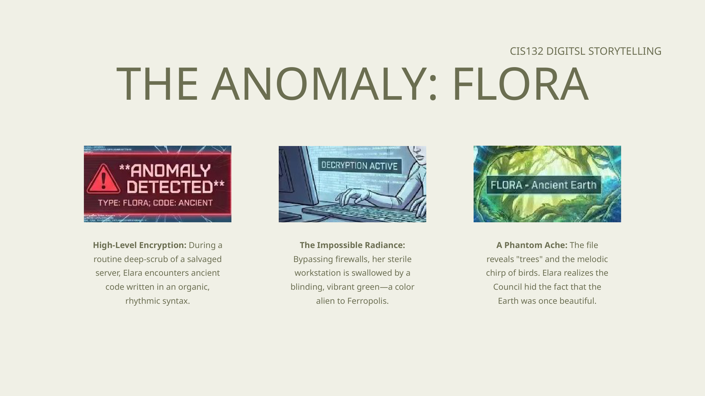
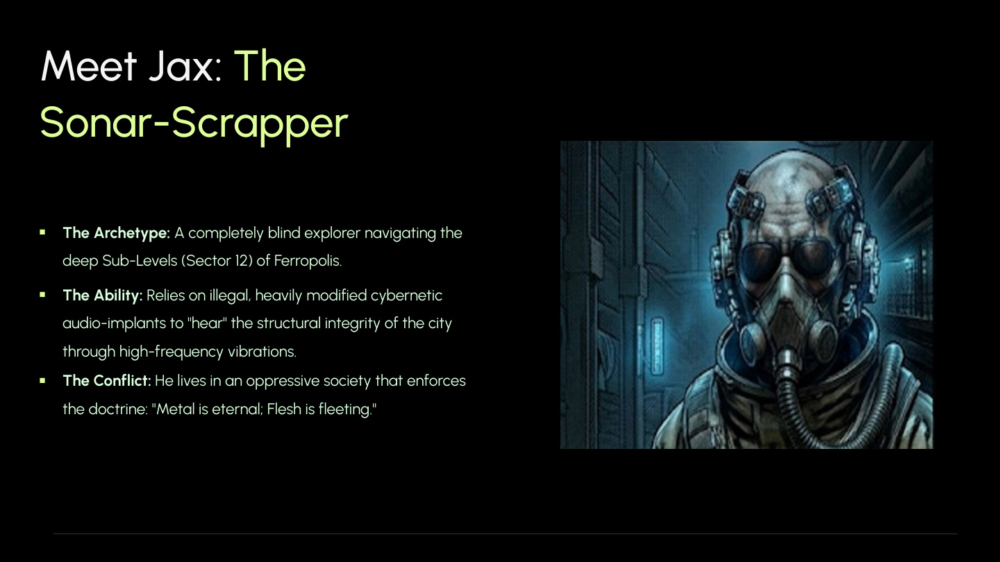
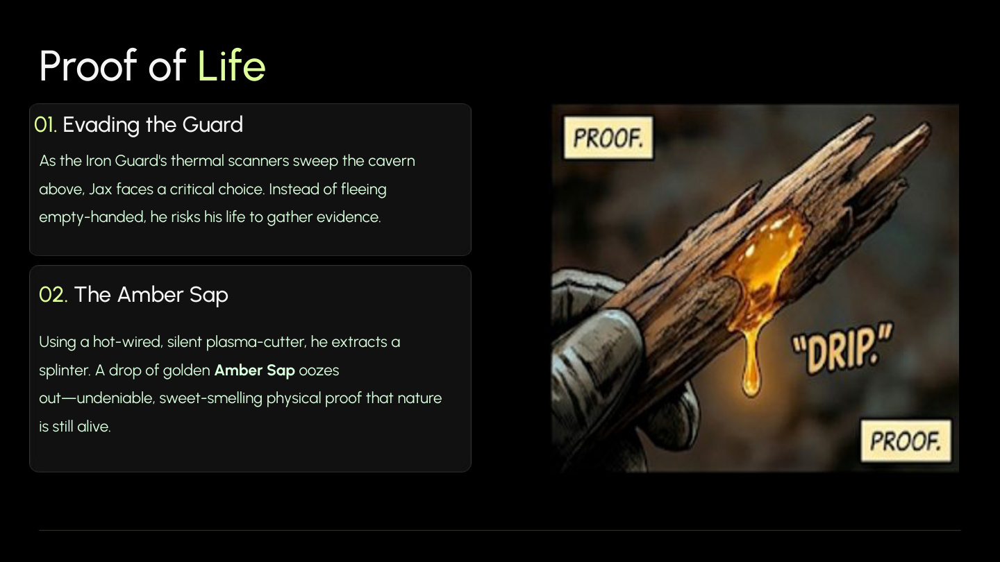
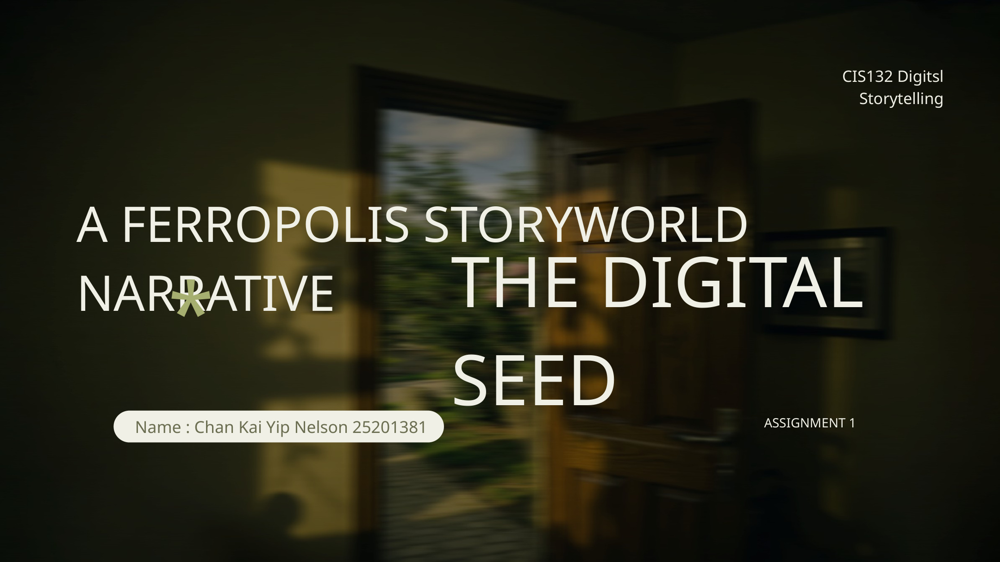

FERROPOLIS
A cold industrial metropolis built on erased memory, suppressed history and buried life. This version rebuilds the project as a high-contrast official site inspired by Hypergryph-style world pages: project overview, notice flow, world setting, factions, characters and media presentation.
Latest Notice
A homepage information block in the style of a project website. The layout is positioned around official update and notice modules.
Website direction has been rebuilt into an official-site format.
The homepage now prioritises notice, project overview, world structure, characters, settings and media. The design language stays dark, cold and high-contrast.
The connected Elara + Jax material now leads the homepage as the flagship world.
Top navigation now follows official-site logic: notice, overview, world, factions, characters, media.
Cold gradients, restrained copy and heavier official presentation now define the page tone.
Project Overview
Ferropolis combines your uploaded materials into one coherent project pitch: a city of industrial order, controlled knowledge and buried organic truth.
One world, multiple truth layers.
Above ground, the Archives maintain order by deleting dangerous memory. Deep below, a blind explorer discovers physical proof that the city’s doctrine is false. Together, these materials form a setting where truth is attacked both ideologically and structurally.
On the site, this becomes a clean official proposition: Ferropolis is a project about industrial power, memory suppression, subterranean revelation and public awakening.

World
The homepage introduces the world structure first, so the site immediately reads like a setting database / project site instead of a narrative toy.

Iron Guard Archives
The high-altitude data fortress where historical fragments are sanitised, erased and brought into line with the state doctrine.

Sub-Level Network
The industrial undercity where mechanical rhythm, surveillance and survival pressure shape the city’s most dangerous underside.

Titan-Tree Foundation
A buried organic structure proving the metal city is not eternal at all, but a parasite feeding on the remnants of older life.
Factions / Characters / Setting
Character presentation is reframed as project cast and setting profile, closer to official operator / world presentation language.
Elara
Data Weaver stationed inside the Archives. Her role is tied to controlled information, erased nature and the release of forbidden truth.
Jax
Blind sonar-scrapper operating in the Deep Layers. He discovers the bedrock anomaly that physically disproves the city’s ideology.
Iron Guard
The enforcement layer of Ferropolis: thermal scanners, doctrine, suppression and the preservation of official order.
Doctrine
“Metal is eternal; Flesh is fleeting.” The line now functions as the site’s official-setting axis and tone setter.
Media / Gallery
Media is presented as visual material rather than story panels, keeping the official-site tone intact.
Main Visual
Public awakening and the return of forbidden green across the city surface.

Setting Visual
Amber sap as undeniable material evidence of organic life beneath the city.

Project Display
Cold industrial layout used as the primary project-marketing image.
Other Project Pages
Supporting materials remain accessible as project subpages, but they no longer define the site tone.

The Absolute Limit
A separate survival narrative focusing on relief-station pressure and emotional endurance.

Nucleus Dust Realm
A separate sci-fi epic built around crystallization, floating cities and coexistence politics.

Future Modules
This slot can later be used for download, PV, soundtrack, faction database or dedicated notice pages.